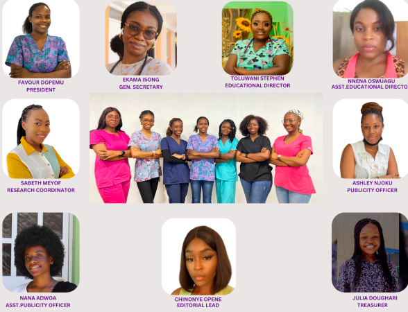
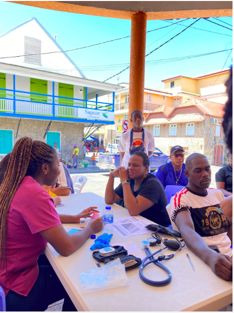

Association of Women Surgeons All Saint's University School of Medcine(AWSASUSM)

ABOUT AWSASUSM
ASUSM- AWS is a not-for-profit educational and professional national organization
dedicated to the mission of inspiring and supporting aspiring female surgeons in
all stages of medical training.It was founded on campus in 2020 to encourage future
health care workers and provide them with skill, information needed presently and for
the future and foster relationships in the wide field of healthcare. Its name does not
imply that it is gender specific because it is not. AWS.ASUSM is our chapter at all saints
university that supports the National Organisation of Association of Women’s Surgeon founded
in 1981.
* We are open to all students both medical and nursing as all saints is made up of both.
* We are open to all genders both male and female We can provide you with mentorship & networking
opportunities, and with your help, a better future for all surgeons and healthcare professionals at
large. Like we say on campus, if you support women in surgery then this is the place for you.

MEET THE EXECUTIVES
Favour Adenike Dopemu -President
Ekama Nchewi Isong- General secretary
Toluwani Stephen Adebola- Academic Director
Nnenna Anestina Osagwu- Assistant Academic Director
Sabeth Meyof Mbith-Toukam Research Coordinator
Ashley Chidinma Njoku - Communications & Publicity Officer
Nana Adwoa Serwaa Amoateng - Assistant Communications
Publicity Officer -Julia Doughari
James- Treasurer
Chinonye Opene - Editorial Lead